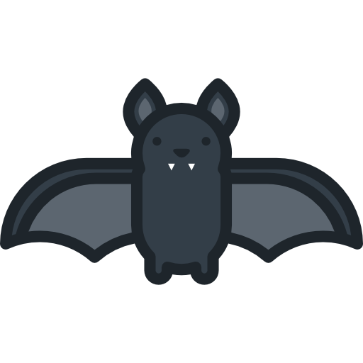
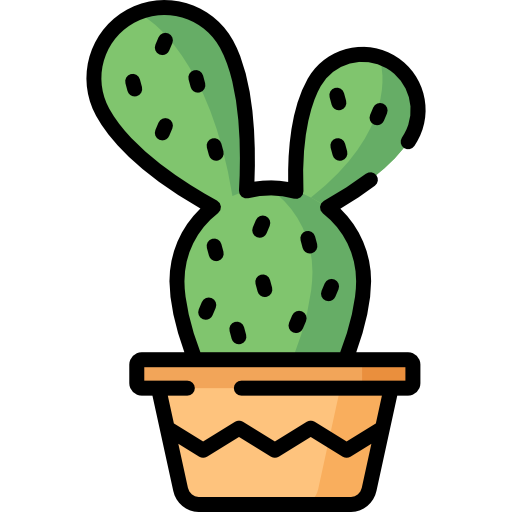
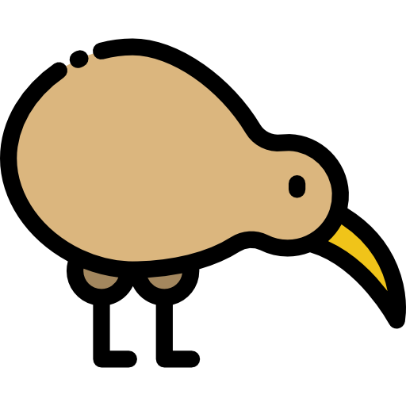
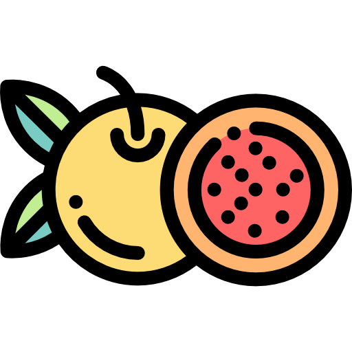

CAUSAM PREJUÍZOS AOS PRÓPRIOS INDIVÍDUOS
GATOS possuem espinhos no pênis
 |
Gatos têm um pênis cercado de dezenas de espinhos rígidos (as espículas) que de acordo com um estudo publicado na revista The Anatomical Record, estão associados com o estímulo da ovulação: provocam sangramento por ocasião do coito, o que estimula o aumento da secreção do hormônio LH que leva a ovulação na gata. Essas espículas, além de provocarem esse sangramento, provocam dor por machucarem intensamente as paredes da vagina da fêmea que necessita desse estímulo para poder ovular. A perda de espinhos também leva à estimulação reduzida do pênis do gato durante a intromissão, promovendo a diminuição da excitação sexual. Assim, para que haja sucesso na reprodução, são necessários os espinhos tanto para o macho quanto para a fêmea. |
|---|
MORCEGOS possuem espinhos no pênis
| Pelo menos 12 espécies de morcegos têm genitais espinhosos. Esses "espinhos" variam em tamanho, podendo atingir até 1cm no pênis dos morcegos da espécie Lasiurus cinereus. Com base no que se sabe sobre outras espécies com pênis farpado, é possível formular diversas explicações. Para esses morcegos, há a possibilidade de que eles tenham evoluído o pênis farpado para danificar os órgãos genitais da fêmea, impedindo que ela acasale com outros machos. Outra hipótese sugere que tais espinhos sejam ferramentas para remoção de espermatozoides de outros machos, já que essas espécies podem armazenar os espermatozoides. Outra explicação pouco aceita é a de que os espinhos penianos possibilitem morcegos machos e fêmeas permaneçam acoplados - semelhante ao velcro - para poderem se acasalar no ar. |  |
|---|
PALMAS que perfuram seus próprios cladódios
|  | As palmas Opuntia littoralis geralmente crescem em aglomerados densos que se espalham por vários metros de largura e até um metro e meio de altura. Os galhos são constituídos por cladódios planos ovais com até 22 centímetros de comprimento. Cada cladódio está coberto de aglomerados de espinhos amarelados de 2 a 4 centímetros de comprimento. Conforme a planta cresce, os galhos engrossam e os espinhos vão penetrando nos galhos vizinhos, perfurando a planta, o que enfraquece o tronco do cacto. |
|---|
KIWIS colocam ovos desproporcionais
| O kiwi (gênero Apteryx) coloca ovos seis vezes maiores do que o comum para uma ave do seu porte — os ovos têm cerca de 180 mm de comprimento e 80 mm de diâmetro. O ovo dessa ave é tão grande que pode ter até 20% do peso do animal e ocupar um espaço tão grande no corpo da fêmea, que ela é obrigada a jejuar por falta de espaço para o alimento. Algumas hipóteses lançadas para explicar a ocorrência de um ovo tão grande, cuja expulsão é dolorosa, é de que com esse tamanho o ovo consiga ter 65% de gema enquanto os ovos das demais aves possuem possuem somente 35-40% de gema. |  |
|---|
A falha reprodução do MARACUJÁ
|  | Plantas angiospermas como o maracujá dependem da reprodução sexuada por polinização para se replicar (o maracujazeiro nunca aceita o próprio pólen e, assim, não se autofecunda). No entanto, cada flor de maracujá dura apenas uma única tarde e se esse processo de polinização não for realizado com sucesso, a flor não-fecundada se fecha no final da tarde, murcha e cai posteriormente. Para complicar ainda mais, a polinização natural do maracujazeiro pode ser interrompida por dias nublados, com chuva ou frio, quando os seus polinizadores param as atividades. Ainda que a atividade dos polinizadores não fosse interrompida, a polinização não aconteceria porque o pólen molhado estoura. |
|---|
Vivipação em diferentes ESPÉCIES VEGETAIS
| A vivipação vegetal (frequentemente confundida com viviparidade), é o processo de germinação precoce de sementes dentro do fruto e pode ocorrer com várias espécies se houver condições para isso. Geralmente, esse tipo de germinação acontece quando as sementes apresentam nível baixo ou nulo de ácido abscísico – fitohormônio cujo efeito inibe a germinação das sementes até que as condições sejam adequadas. Acontece que certas espécies carecem desse hormônio supressor e as sementes podem germinar ainda dentro do fruto. |  |
|---|